Практичні курси · журнал «ДентАрт» 2016 №2
Реставрація контактних поверхонь у нижніх передніх зубах
CONTACT SURFACES RESTORATION OF THE FRONT LOWER TEETH
Зуби об'єднуються в зубному ряду контактними поверхнями, що утворюють контактні пункти. У попередній статті [4] були детально описані анатомічна форма контактних поверхонь верхніх передніх зубів, відомі способи прямого відновлення композитами контактних поверхонь і наш спосіб з використанням індивідуально контурованої об'ємної лавсанової матриці [5].
Нижні передні зуби мають особливу анатомічну форму, яка значно відрізняється від анатомічної форми верхніх передніх зубів, що зумовлено їх функціональним призначенням. Коректне відновлення контактних поверхонь нижніх передніх зубів дозволяє відновити не лише анатомічну форму, але і їх функцію.
Клінічна анатомія контактних поверхонь
Видима форма нижніх передніх зубів, що становлять фронтальну ділянку нижнього зубного ряду, визначається контактними поверхнями, ріжучим краєм з куточками і шийкою. Анатомічно нижні передні зуби розташовані віялоподібно, їх коронки розходяться знизу вгору. Але завдяки ознаці кута коронки нижні різці створюють враження, що розташовані в зубному ряду вертикально.
Ознака кута коронки в нижніх різцях не виражена і проявляється лише незначною асиметричністю контактних поверхонь і куточків ріжучого краю [1, 7]. Ріжучі краї різців перебувають на одному рівні, рвучі горбики іклів — трохи вище лінії ріжучих країв.
Вузькі шийки у поєднанні з рівним ріжучим краєм і незначною асиметрією контактних поверхонь надають коронкам нижніх різців виражену трикутну форму. Зеніт шийки розташований по середній лінії коронки, і це додатково підкреслює строгу вертикальну орієнтацію в зубному ряду коронок нижніх різців.
З нижніх передніх зубів тільки ікла мають такі ж самі виражені ознаки кута коронки, як і верхні передні зуби. Клінічно зеніт шийки нижнього ікла відхиляється від середньої лінії коронки латерально, верхівка рвучого горбика зміщена медіально від середини коронки, тому дистальний скат горбика довший і округлий, а медіальний — коротший і прямий [1, 7]. Ця асиметрія зумовлена і внутрішньою будовою ікла, в коронці якого розташовані 4 мамелони: центральний, медіальний, дистальний і четвертий додатковий, розташований між центральним і дистальним мамелоном. Саме додатковий мамелон і надає коронці ікла вираженої асиметрії [1].
Виражена асиметрія шийки і рвучого горбика нижніх іклів поєднується з асиметрією контактних поверхонь: усі латеральні поверхні опукліші, усі медіальні поверхні пряміші.
Топографічно всі контактні поверхні коронок нижніх передніх зубів утворюються емаллю, а дентин, починаючи від шийки зуба, проходить тільки вертикально, не розширюється і не бере участі у формуванні контактних поверхонь. Це просте правило дозволяє легко спланувати шари штучного дентину і емалі при виконуваній реставрації: у фронтальній площині відновлювати дентин слід дентиновими відтінками композиту тільки в межах вертикалі, що йде від краю шийки зуба. Контактні поверхні слід відновлювати лише емалевими відтінками між вертикаллю і контактними пунктами. Оскільки товщина емалі — величина досить постійна і становить у нижніх різцях близько 0,7 мм, то відстань для побудови двох суміжних контактних поверхонь має дорівнювати приблизно 1,5 мм. Ця ж величина становить відстань між шийками суміжних зубів і зумовлює ширину міжзубних клинів.
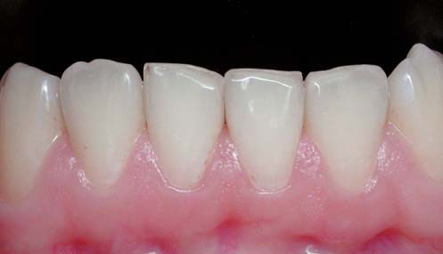
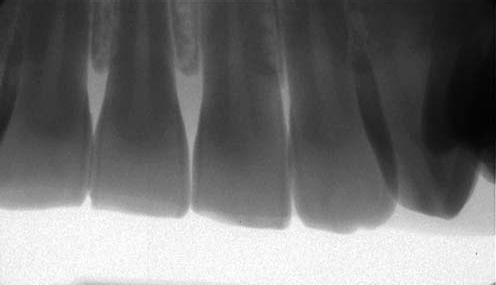
Трикутна форма коронок нижніх різців підкреслена валиками переходу контактних поверхонь у вестибулярну поверхню, форма латеральної і медіальної контактних поверхонь завжди різна, але в нижніх різцях ці відмінності мінімальні. На рентгенівському знімку добре видно, що дентин у межах коронки залишається такої ж самої ширини, як і на шийці, а опукла частина контактних поверхонь утворена лише емаллю.
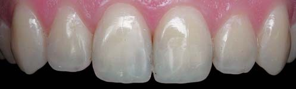
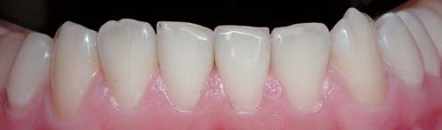
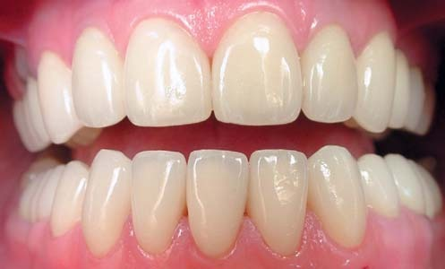
Для фронтального профілю контактні поверхні нижніх передніх зубів, як і верхніх, мають S-подібну форму, що складається з опуклої коронкової і увігнутої пришийкової частини.
Діаметральні контактні точки коронок нижніх різців, які беруть участь в утворенні контактних пунктів із суміжними зубами, на відміну від контактних точок верхніх різців, розташовані практично на одній висоті.
Увігнута частина контактної поверхні забезпечує плавний перехід емалі на шийку зуба, що має паралельні стінки. Перехід контактних поверхонь у вестибулярну поверхню утворює виражені валики, що створюють зону рефлексії. Ця зона має виражену трикутну форму через дуже вузький екватор. Тонку шийку нижніх різців підкреслюють виступаючі міжзубні сосочки. Перехід контактних поверхонь в оральну поверхню формує крайові валики, які замикають по краях язичну ямку. Відновлені крайові валики захищають міжзубні сосочки від ушкоджень під час функції відкушування навіть при не дуже щільних контактних пунктах.
Передні зуби контактують між собою тільки оральними поверхнями, оскільки вони розташовані по дузі. Внаслідок цього простір, утворений контактними поверхнями передніх зубів, завжди відкритий вестибулярний бік. Дотримання цього правила при реставрації передніх зубів дозволяє відтворити ефект окремо розташованих коронок зубів, що становлять єдиний зубний ряд.
Контактні поверхні беруть участь в розподілі жувального навантаження через деформацію зубів під час стиснення щелеп. При жувальному навантаженні коронки зубів деформуються, скорочуючись по висоті і розширюючись у боки [8]. Через таку деформацію коронок зубів значна частина навантаження не тільки поглинається, а й передається по зубному ряду через збільшення щільності контактних пунктів. Таким чином, щільність контактних пунктів є змінною величиною, яка залежить від сили стискання щелеп, і ми розуміємо, що визначаємо її лише в стані спокою.

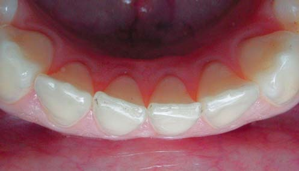
Відновлення контактних поверхонь при реконструкції нижніх передніх зубів у системному відновленні оклюзії
Загальний опис клінічної ситуації
Пацієнтку 28 років турбує нерівна лінія ріжучих країв різців і горбиків іклів, яка утворилася в результаті неправильного положення нижніх передніх зубів у зубному ряду. Через значний дефіцит місця у фронтальній ділянці нижньої зубної дуги план очікуваного ортодонтичного лікування передбачав видалення одного зуба, що було неприйнятним.
Нижні ікла повернені по осі і нахилені медіально, на дистальних схилах в результаті видалення сформувалися дефекти з точковим оголенням дентину. У пришийковій зоні зуба 33 є реставрація класу V з незначним крайовим забарвлюванням, супроводжувана гінгівітом.
Латеральні різці зміщені орально, їх ріжучі краї практично не зношуються, завдяки чому збереглися латеральні кути і дефекти емалі фіксуються лише в медіальній частині ріжучих країв.
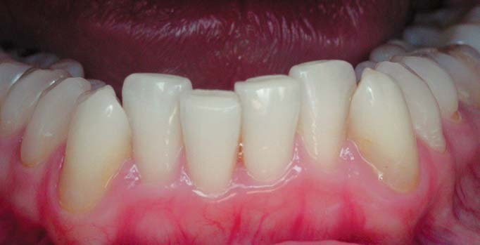
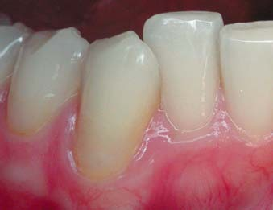
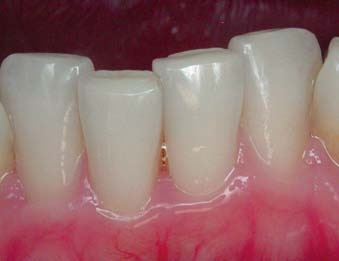
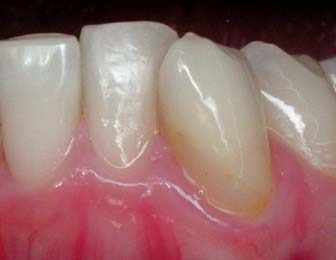
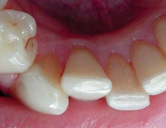
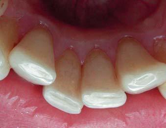
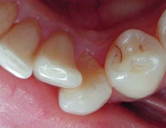
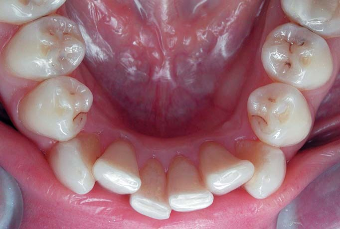
Правий центральний різець перебуває у вестибулярній позиції, його ріжучий край піддався найбільшому стиранню до рівномірного оголення дентину.
Лівий центральний різець міститься в зубній дузі, внаслідок стирання вестибулярна і оральна частини емалі розділені борозенкою вздовж ріжучого краю.
Зверніть увагу: на всіх різцях оральна емаль по ріжучому краю має світліший вигляд, що пов'язане з більшим розсіюванням світла емалевим краєм через безліч мікротріщин, котрі утворилися в результаті циклічного оклюзійного навантаження. Поширення і злиття мікротріщин призводить до відколів, як на медіальному краї зуба 31.
Ясенний край без видимих патологічних змін, за винятком краю, який оточує пришийкову реставрацію на лівому іклі, і це ознака можливого відшарування реставрації від поверхні зубних тканин.
На опорних горбиках нижніх премолярів, як і на всіх бічних зубах, є стерті майданчики з оголенням дентину, однакові праворуч і ліворуч в міру оголення, що свідчить про рівномірне зниження міжальвеолярної висоти або вертикальне зміщення нижньої щелепи. Якщо на горбиках стирається емаль і оголюється дентин зубів, значить, вертикальне зміщення досягло біологічно неприйнятного рівня.
У звичному змиканні відзначається збіг середньої лінії верхнього і нижнього зубних рядів, проте верхні передні зуби покриті керамічними вінірами, тому такий збіг міг бути досягнутий штучно, шляхом реставрації. Однакове перекриття верхніми бічними зубами нижніх праворуч і ліворуч також підтверджує відсутність горизонтального зміщення нижньої щелепи.
Співвідношення перших молярів нейтральне, отже, немає сагітального зміщення нижньої щелепи.
У передньому положенні оклюзії в контакті з нижніми зубами перебувають тільки верхні центральні різці, що відповідає нормі. У правому та лівому положенні оклюзії в контакті з нижніми зубами перебувають передусім верхні латеральні різці, праворуч також і центральний різець, а контакт між іклами не є домінуючим. Це, звичайно, пов'язане з медіальним нахилом нижніх іклів.
Діагноз
Дисгнатичний нейтральний прикус, медіальний нахил зубів 33 і 43, оральне положення зубів 32 і 42, вестибулярне положення зуба 41. Системне стирання зубів.
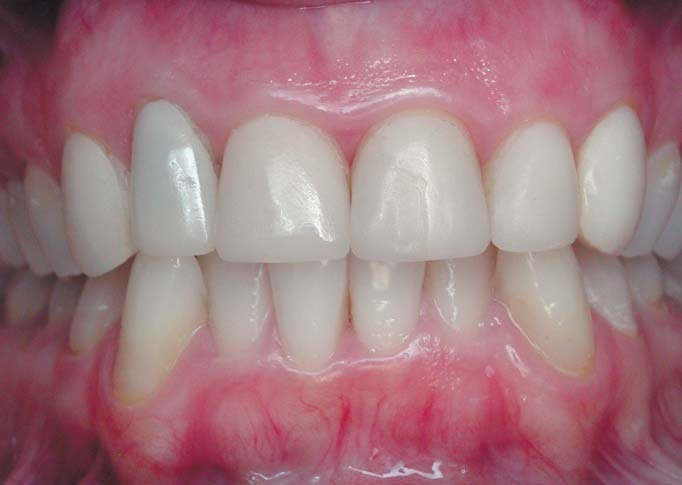
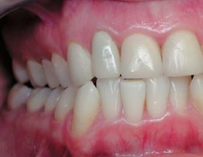
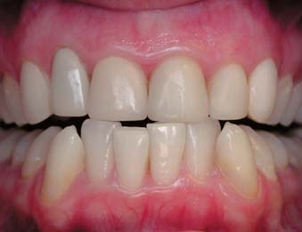
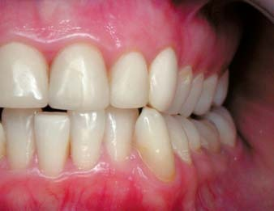
Звичне змикання, праве, переднє і ліве положення оклюзії.
Що зроблено до реконструкції нижніх передніх зубів
Після місячного носіння еластичної ізолюючої капи в рамках системного відновлення оклюзії протягом 2-х днів відновлена анатомічна форма всіх верхніх зубів.
Спочатку було замінено керамічні реставрації композитом на іклах з контролем над симетричністю відновлення довжини коронок. Потім проведена заміна композитних реставрацій на нові реставрації на бічних зубах праворуч і ліворуч. На завершення проведено ендодонтичне переліковування зуба 12, заміну керамічних вінірів на різцях, при препаруванні яких на контактних поверхнях під вінірами виявлено активні осередки глибокого каріозного ураження.
Через місяць протягом 2-х днів відновлена анатомічна форма всіх нижніх бічних зубів, включаючи заміну композитних реставрацій і ендодонтичне переліковування зубів 36 і 47. На цьому етапі повністю усунуто вертикальне зміщення нижньої щелепи в центральному положенні оклюзії.
Для реконструкції коронок іклів та різців з відновленням правильного співвідношення зубних рядів у передньому і бічних положеннях оклюзії виділений окремий одноденний візит у клініку. Етап відновлення нижніх передніх зубів є завершальним у системному відновленні оклюзії при патологічній стертості зубів, коли нижні передні зуби повинні «замкнути» прикус у співвідношенні по вертикалі, досягнутому при відновленні висоти бічних зубів.
Розрахунок передньої ділянки зубного ряду
Реконструкція коронок зубів — це зміна позиції коронки в просторі зі збереженням її розмірів [2]. Реконструкція зубного ряду — це збільшення (при діастемі/тремі) або зменшення (при скупченості) коронок зубів зі збереженням пропорцій між ними [3]. У цьому клінічному прикладі потрібне поєднання реконструкції коронок зубів і реконструкції зубного ряду.
Для планування реконструкції коронок нижніх іклів та різців проведено розрахунок передньої ділянки нижнього зубного ряду.
Штангенциркулем виміряно відстані між довільно обраними точками вздовж лінії контактних пунктів:
- 3,8 мм від медіальної поверхні зуба 43 до латеральної поверхні зуба 41;
- 5,0 мм між латеральною і медіальною поверхнями зуба 41;
- 4,4 мм від медіальної поверхні зуба 41 до латеральної поверхні зуба 31;
- 4,0 мм від латеральної поверхні зуба 31 до медіальної поверхні зуба 33.
Довжина передньої ділянки зубної дуги між іклами становила 17,2 мм.
Ширина різців відповідає стандартним розмірам і становить 5,5 мм для латеральних різців та 5,0 мм для центральних різців. Загальна ширина різців становить 21 мм. Таким чином, дефіцит місця в зубній дузі дорівнює 3,8 мм. Це означає, що навіть коли отримати додатковий простір 1 мм за рахунок медіальних поверхонь ікол, то дефіцит місця 2,8 мм, який залишився, практично неможливо компенсувати лише за рахунок контактних поверхонь різців.
Нами обраний компромісний варіант реконструкції різців та ікол, який дозволив би при ушкодженнях тільки в межах емалі отримати єдину лінію ріжучих країв різців і домінуючі контакти між іклами в бічних положеннях оклюзії.
Сума коефіцієнтів нижніх різців дорівнює 4,2 (1,1 + 1 + 1 + 1,1). Якщо зішліфувати латеральну поверхню латеральних різців на 0,4 мм, то довжина передньої ділянки нижнього зубного ряду зменшиться в сумі з іклами на 1,8 мм і досягне 19,2 мм.
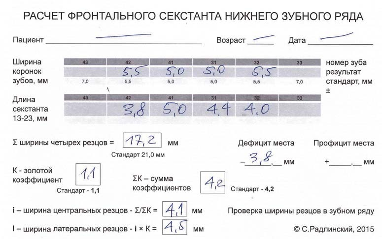
Розрахунок фронтального секстанта нижнього зубного ряду штангенциркулем: ширина коронок і довжина сексанта для зубів 43-33, дефіцит місця 3,8 мм, золотий коефіцієнт К=1,1, підсумкова ширина центральних різців 4,1 мм, латеральних — 4,5 мм. © С.Радлінський, 2015.
Розділивши передбачувану довжину передньої ділянки нижнього зубного ряду на суму коефіцієнтів, отримуємо ширину коронок центральних різців — 4,6 мм (19,2 мм/4,2). Помноживши цю ширину на коефіцієнт 1,1, отримуємо ширину латеральних різців — 5,0 мм.
Виставляємо ці розміри на штангенциркулі і перевіряємо плановані зміни ширини коронок різців у ротовій порожнині. Розрахункові розміри коронок різців після реконструкції відповідають передній ділянці зубної дуги, розширеній на 1 мм за рахунок медіальних поверхонь ікол. Таким чином, пропорційна кінцева ширина коронок різців становить для латеральних 5,0 мм (ушкодження по 0,25 мм з кожного боку), для медіальних 4,6 мм (ушкодження по 0,2 мм з кожного боку). Ці поперечні розміри коронок менші, ніж стандартні, але вони «вписуються» в цю передню ділянку нижнього зубного ряду.
Оперативна підготовка, препарування зубів
У ікол зішліфовані медіальні поверхні на 0,5 мм зі збереженням S-подібної форми контактної поверхні і позиції контактного пункту.
На латеральних різцях зішліфовані латеральні і медіальні поверхні, оральна емаль видалена в межах 2 мм від ріжучого краю, дентин по ріжучому краю заглиблений на товщину емалі, по вестибулярній поверхні до екватора зішліфований безпризмовий шар емалі.
На зубі 31 у межах поверхневої емалі зішліфовані контактні поверхні, по ріжучому краю виконано зовнішні скоси емалі шириною до 2 мм.
У зуба 41 практично до екватора видалена вестибулярна емаль, дентин, що відкрився, видалений на глибину штучної емалі, поверхнева емаль по оральній поверхні зішліфована до горбика для отримання кращого з'єднання поверхні емалі з композитом.
Після оперативної підготовки емаль і дентин візуально «вписуються» в остаточну форму реставрованих зубів пошарово. Це означає, що в остаточній формі природний і штучний дентин будуть рівномірно покриті шаром природної та штучної емалі, природне і штучне емалево-дентинне з'єднання перебуватиме на однаковій глибині. Наслідком дотримання в реконструкції топографії зубних тканин буде однаковий зовнішній вигляд різців та ікол (колір коронок зубів), і відсутність післяопераційної чутливості реставрованих зубів.
Препарування зубів робилося під термінальною анестезією і без рабердаму. Після препарування ще раз штангенциркулем перевірено поперечні розміри майбутніх коронок нижніх різців, щоправда, тепер дороги назад уже немає...
Накладаємо рабердам для ізоляції робочого поля і беремося до реконструкції нижніх передніх зубів.
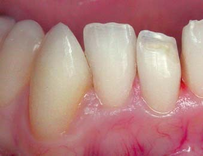
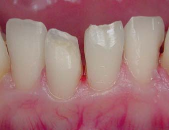
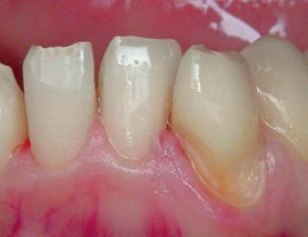
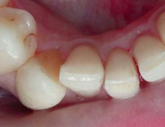
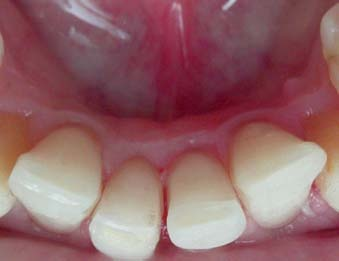
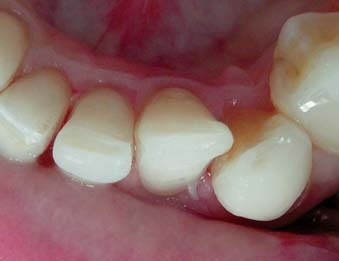
Відновлення іклів і різців в основному
Фронтальний вигляд передніх зубів. Послідовна побудова коронок передніх зубів в основному, тобто без контактних поверхонь, зайняла близько двох з половиною годин. Спочатку були відновлені горбики іклів. Вершини горбиків були зміщені дистально з урахуванням корекції медіального нахилу іклів. Латеральні різці відновлені передусім по передній поверхні: світлий центр, дентин, емаль і поверхнева емаль. Борозенка в дентині по оральній поверхні закрита емалевим відтінком, і тепер вестибулярна емаль стала оральною поверхнею ріжучого краю.
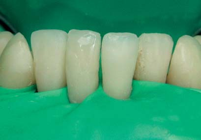
Вигляд передніх зубів по осі. Правий центральний різець відновлений по оральній поверхні: світлий центр, дентин, емаль, поверхнева емаль. Борозенка в дентині по вестибулярній поверхні закрита емалевим і прозорим відтінками, і тепер оральна емаль стала вестибулярною поверхнею ріжучого краю. Лівий центральний різець відновлений так, щоб «вписатися» в загальну лінію ріжучих країв усіх різців. Вигляд передніх зубів по осі показує, що всі ріжучі краї утворюють симетричну дугу, проте співвідношення латеральних різців з іклами залишилося компромісним.
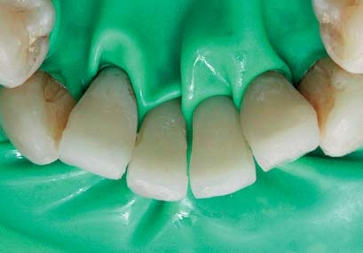
Контактна поверхня ікла. Для коректної побудови контактних поверхонь потрібно дотримуватися послідовності «від країв до центру». Спочатку відновлюється права частина контактних поверхонь, потім — ліва частина, і на завершення відновлюються дві контактні поверхні по середній лінії, між центральними різцями. На знімках показано відновлення контактних поверхонь лівого боку, і першою на цьому боці була відновлена медіальна поверхня ікла. Після полімеризації фінішним бором і абразивними смужками ширина ікла доведена до розрахункової.
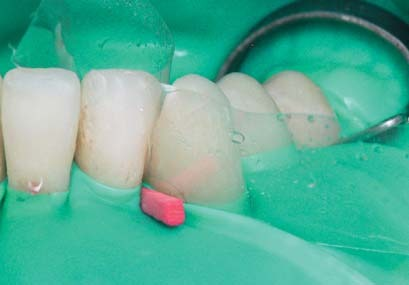
Контактна поверхня різця. Наступною відновлена латеральна поверхня латерального різця, проведена її фінішна обробка з перевіркою якості контактних поверхонь і щільності контактного пункту. Далі відновлено медіальну поверхню латерального різця, завершуючи реставрацію коронки цього зуба. При скупченості зубного ряду значно зменшується відстань між шийками зубів і дуже складно встановлювати між зубами стандартні пластикові клини. Тому при скупченості зубного ряду краще використовувати вузькі дерев'яні клини.
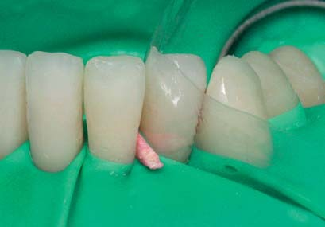
Перевірка ширини коронки. За допомогою штангенциркуля визначаємо отриману ширину коронки і металевою фінішною смужкою доводимо її до розрахункової, в даному випадку — 5,0 мм. Ця ширина коронки менша, ніж початкова, на 0,5 мм (по 0,25 мм з кожного боку), тобто всі ушкодження на контактних поверхнях, пов'язані з реконструкцією коронки зуба, — в межах емалі. На поверхні внутрішні шари емалі захищені шаром композиту, що створює контактні поверхні, і такий підхід дозволяє уникнути післяопераційної чутливості реставрованих зубів.
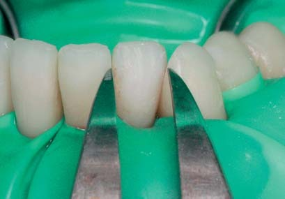
Відновлення контактної поверхні
Установка матриці і розклинювання. Лавсанову смужку, попередньо відконтуровану на спеціальному пристрої [5], встановили в ясенний жолобок і притиснули до поверхні шийки вузьким дерев'яним клином. Оскільки дерев'яні клини, на відміну від пластикових, не мають установчого майданчика, для їх установки і видалення ліпше користуватися невеликим затискачем. Під час установки матриці і введення клина в міжзубний проміжок порушується прилягання латексної завіси, і потенційно можливе потрапляння ясенної рідини на адгезивно підготовану робочу поверхню.
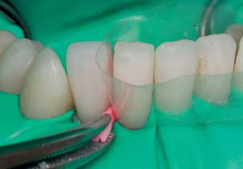
Адгезивна підготовка поверхні. Щоб запобігти контамінації адгезивно підготованої робочої поверхні, потрібно після установки матриці і розклинювання завжди робити очищувальне протравлювання контактної поверхні ортофосфорною кислотою протягом 10 с. При змиванні кислоти видаляється і шар, інгібований киснем, необхідний для створення умов приєднання до поверхні нової порції композиту. Інгібований шар слід оновити класичним адгезивом [4], який можна внести у вузький простір контактної поверхні тільки на пензлику.
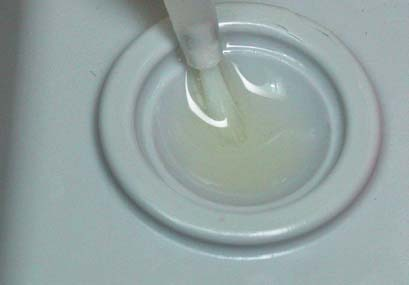
Полімеризація контактної поверхні. Під класичний адгезив очищену робочу поверхню під матрицею слід повністю висушити, внести адгезив, рівномірно розрівняти по поверхні повітряним струменем і заполімеризувати протягом 20 с. Після цього можна внести і притерти прозорий відтінок композиту. Ліпше використати мікрогібридний композит, який на відміну від наногібридного можна досить легко притерти до адгезивно підготованої поверхні. Напрям світлового потоку при полімеризації композиту не має значення, однак його потужність повинна бути під контролем.
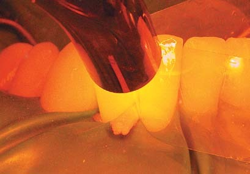
Моделювання контактної поверхні праворуч. На відому і доведену до розрахункової ширини коронки медіальну поверхню латерального різця «покладена» суміжна контактна латеральна поверхня центрального різця. Складка в матриці по вестибулярній поверхні показує висоту установки контактного пункту (контактні пункти між нижніми різцями повинні бути на одному рівні). Далі — видалення поверхневого шару металевою і лавсановою абразивними смужками, перевірка флосом якості контактної поверхні і лавсановою смужкою — щільності контактного пункту.
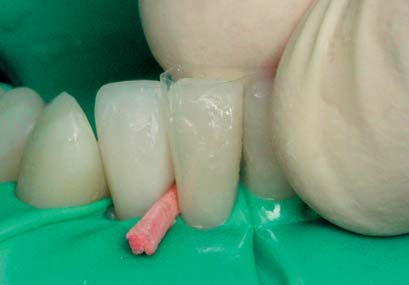
Моделювання контактної поверхні ліворуч. Послідовність дій з моделювання контактної поверхні така ж сама, як описана в попередній статті з побудови контактів [5]. Відмінність полягає лише в формі контактних поверхонь: контактні пункти нижніх зубів, які мають однакову висоту, повинні бути на одному рівні, але при цьому латеральні поверхні мають бути також опуклішими, а медіальні — прямішими, як і на верхніх різцях. Відновлення контактів всього зубного ряду завершується побудовою двох контактних поверхонь по середній лінії.
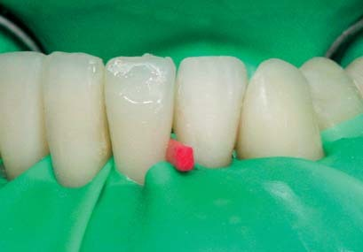
Відновлення центрального контакту зубного ряду
Вихідна ширина коронки праворуч. Для побудови центрального контакту потрібно спочатку виміряти штангенциркулем ширину коронок центральних різців. Якщо ширина коронок лише трохи відрізняється від розрахункової величини, то приймається фактичний розмір, тому що однаковість і симетричність центральних різців важливіша, ніж дотримання пропорції між центральними і латеральними різцями. Важливо також враховувати ефект збільшення простору між зубами при розклинюванні, тому слід встановити клини між центральними різцями і повторити вимірювання ширини коронок.
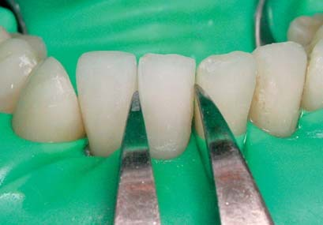
Вихідна ширина коронки ліворуч. Якщо початково коронка одного з центральних різців ширша за іншу, то відновлювати контактну поверхню слід спочатку ширшої коронки, зберігши простір між різцями для відновлення другої контактної поверхні. У нашому клінічному прикладі ширина коронки зуба 41 становила 4,4 мм, ширина коронки зуба 31 — 4,6 мм. Оскільки коронка лівого центрального різця виявилася ширшою, то першою контактну поверхню потрібно відновлювати ліворуч. Зазвичай для розклинювання центральних різців потрібно вже додати анестезію.
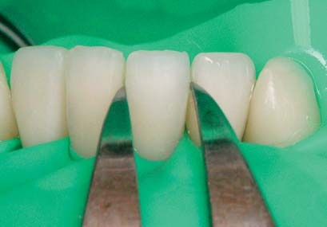
Встановлення ширини коронки ліворуч. Після відновлення контактної поверхні лівого центрального різця отримана ширина коронки була виміряна штангенциркулем. Якщо фактична ширина коронки більша від розрахункової в межах 0,2 мм, то фінішну обробку і корекцію контактної поверхні можна робити тільки абразивними смужками, якщо ширина коронки більша розрахункової на 0,3 мм і більше, то фінішну обробку слід починати фінішним бором зернистістю 30 мк. Обробка завершується, коли штангенциркулем буде підтверджено досягнення розрахункової ширини коронки.
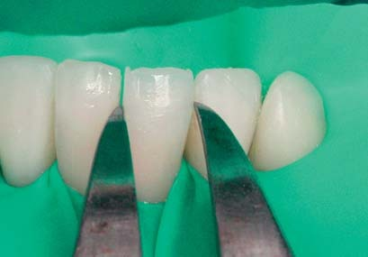
Відновлення контактної поверхні праворуч. Контуровану лавсанову смужку встановили у міжзубний проміжок і зафіксували її дерев'яним клинчиком. Далі провели очищувальне кислотне протравлювання, внесли пензликом класичний адгезив, розподілили його повітряним струменем, провели полімеризацію адгезиву протягом 20 с. Потім внесли і притерли прозорий відтінок композиту, змоделювали абразивною смужкою контактну поверхню і провели полімеризацію з двох боків по 10 с. Ця послідовність дій має бути відпрацьована командою стоматолога до автоматизму.
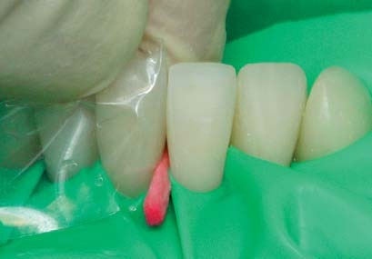
Перевірка отриманої ширини коронки. Після видалення лавсанової матриці проведено фінішну обробку медіальної контактної поверхні правого центрального різця: видалено залишки по шийці з вестибулярного та орального боку, складку по вестибулярній поверхні, змодельовано медіальний кутик ріжучого краю. З контактної поверхні абразивними смужками видалено поверхневий шар. Цю процедуру слід виконувати, контролюючи тиск смужки на поверхню композиту, тому клиничок залишався між центральними різцями, забезпечуючи оперативний доступ до контактної поверхні.
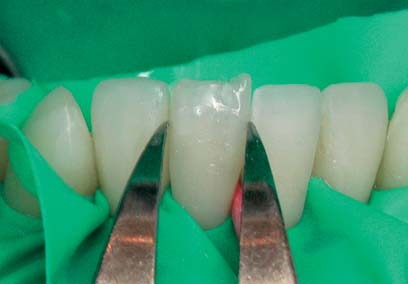
Фінішна обробка контактних поверхонь
Оцінка поверхні після полімеризації. Фінішну обробку контактної поверхні показано на прикладі латеральної поверхні правого центрального різця. Це друга контактна поверхня з двох, які утворюють контакт, і її потрібно просто «укласти» на відому медіальну поверхню латерального різця, дбаючи лише про те, щоб контактні пункти були на одному рівні. Для оцінки отриманої поверхні слід видалити контурну матрицю і повітряним струменем висушити міжзубний проміжок, а також штангенциркулем визначити надлишок ширини коронки для фінішної обробки.
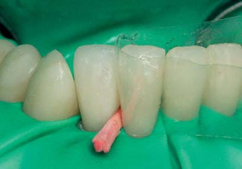
Видалення поверхневого шару по контакту. Поверхневий шар, який під матрицею без доступу кисню сполімеризувався, підлягає обов'язковому видаленню, тому що він м'який, легко стирається і забарвлюється харчовими барвниками. Видаляти поверхневий шар на опуклій частині контактної поверхні можна тільки металевою абразивною смужкою, яка завдяки своїй жорсткості добре вирівнює поверхню композиту. Зазвичай на одній поверхні ми виконуємо до десяти зворотно-поступальних рухів з легким тиском, і цього достатньо, щоб видалити весь поверхневий шар композиту.
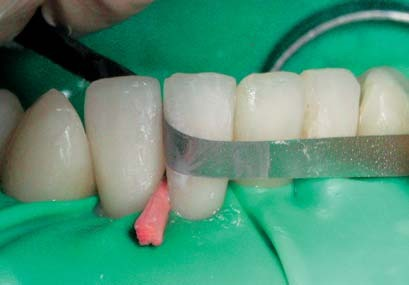
Видалення поверхневого шару по шийці. У зоні шийки жорстка металева смужка буде залишати поперечні подряпини на поверхні цементу, тому видаляти поверхневий шар по шийці слід тільки еластичною лавсановою смужкою, що поєднує дві зернистості абразиву: середню і дрібну. Для того, щоб краєм абразивної смужки не пошкодити сусідню контактну поверхню, контактний пункт ми блокуємо складеною удвічі відпрацьованою матрицею (товщина складеної вдвічі матриці порівнянна з товщиною абразивної лавсанової смужки). Клинчик видалено після блокування контакту.
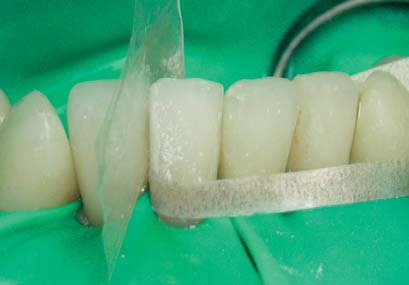
Перевірка якості контактної поверхні. Після видалення полімеризованого поверхневого шару слід перевірити якість контактної поверхні. Перевірка виконується зубним флосом, який необхідно ввести в ясенну борозну і вивести кілька разів через контактний пункт: з акцентом на вестибулярну поверхню, по центру і з акцентом на оральну поверхню. Якщо контактна поверхня рівна і гладка, флос буде ковзати легко і вільно, не розшаровуючись. Якщо флос розшаровується, чіпляється за сходинки на контактній поверхні, слід повторити обробку абразивними смужками.
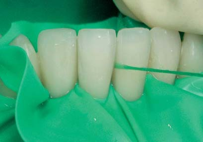
Перевірка щільності контактного пункту. Комфорт пацієнтки в користуванні реставрованими зубами залежить від щільності контактного пункту. Щільність контактного пункту повинна бути помірною/середньою і перевіряється тестом з лавсановою смужкою, який запропонували ми [5]. Потрібно ввести лавсанову смужку між зубами, подолавши контактний пункт, і повільно витягати у напрямку до себе. По тому, як сильно реставровані зуби утримують смужку, судять про щільність відновленого контактного пункту. Занадто щільний контактний пункт необхідно послабити абразивною смужкою.
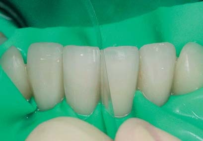
Нижні передні зуби після реставрації
Нижні передні зуби після моделювання. Після побудови контакту між центральними різцями по середній лінії ансамбль нижніх передніх зубів набув завершеного вигляду — прорвана латексна завіса лише підкреслює загострення пристрастей перед завершенням реставрації... Після зняття рабердаму потрібно виконати процедури, недоступні раніше через накладену латексну завісу: корекцію композиту фінішним бором по шийках зубів в місцях переходу контактних поверхонь в оральну і вестибулярну поверхні, перевірку та інтеграцію зубів в оклюзії, шліфування та полірування всіх поверхонь.
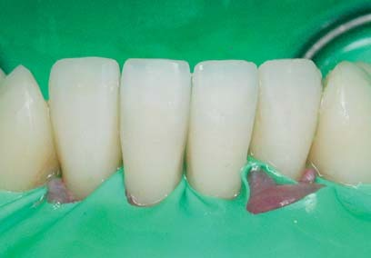
Нижні передні зуби після полірування. Шліфування контактних поверхонь зроблено супердрібними абразивними смужками на лавсановій основі. Контактні поверхні полірувалися пастами Призма-Глос за допомогою зубного флоса. Горбики іклів і ріжучі краї різців — на одній горизонтальній лінії, контактні пункти між різцями розташовані на 2 мм нижче ріжучих країв і паралельно до них. Контактні пункти між латеральними різцями та іклами розташовані нижче, шийки різців — на різній висоті. Ширина різців пропорційна, але менше норми по відношенню до висоти коронок.
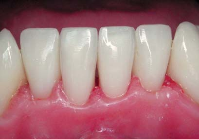
Вид реставрованих зубів по осі. Ріжучі краї різців утворюють правильну єдину дугу, однак верхівки горбиків нижніх іклів залишилися незначно зміщеними вестибулярно — як результат компромісу в системній реконструкції нижніх передніх зубів. По темних смужках дентину, що просвічується, і світлих смужках оптичного кордону емалі та наногібридного композиту можна визначити ріжучі краї, переміщені у вестибулярний бік. Ясенний край має численні операційні пошкодження, жодних спеціальних процедур для його відновлення не потрібно, тільки час.
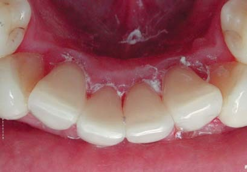
Нижні передні зуби через місяць
Головна проблема, яка турбувала пацієнтку, — нерівна лінія ріжучих країв різців і горбиків іклів через неправильне положення нижніх передніх зубів у зубному ряду — вирішена повністю. Контактні пункти і ріжучі краї різців утворюють дві горизонтальні лінії, що йдуть паралельно. Досягнуто ілюзії того, що коронки іклів мають вертикальну позицію. Дефіцит місця у фронтальній ділянці нижньої зубної дуги покритий за рахунок пропорційного і симетричного зменшення ширини коронок різців, зменшення медіальної поверхні іклів. Досягнута ширина латеральних різців становить 5,0 мм і центральних різців — 4,6 мм, коефіцієнт співвідношення ширини латеральних і центральних різців відповідає стандарту — 1,1.

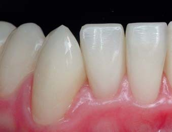
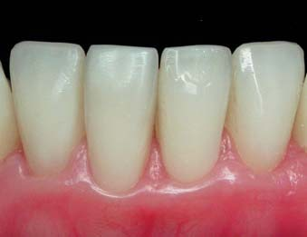
Реконструкцією коронок нижніх передніх зубів були компенсовані оральне зміщення латеральних різців, вестибулярний зсув правого центрального різця, мезіальний нахил іклів. По ріжучих краях різців і горбиках іклів усунено дефекти, що утворилися в результаті стирання. Тепер природна і штучна емаль покривають дентин по всій поверхні шаром приблизно однакової товщини, вестибулярна і оральна емаль по ріжучих краях склеєна композитом для запобігання розтріскуванню і сколюванню.
У звичному змиканні середня лінія верхнього і нижнього зубних рядів збігається, перекриття верхніми бічними зубами нижніх зубів однакове праворуч і ліворуч. Після відновлення висоти бічних зубів зменшилося перекриття зубів на фронтальній ділянці. У передньому положенні оклюзії в контакті з нижніми зубами перебувають лише верхні центральні різці, що відповідає нормі і сприяє виконанню функції відкушування. У правому та лівому положеннях оклюзії в контакті з нижніми іклами перебувають лише верхні ікла. Тепер контакти між іклами стали домінуючими, що відповідає нормі і сприяє виконанню функції відривання.
Реконструкція нижніх передніх зубів тривала весь робочий день з двома годинними перервами: передопераційна підготовка та препарування зубів — приблизно 1 годину, побудова зубів в основному — 2,5 години, побудова контактів — 2 години, інтеграція в оклюзії, шліфування, полірування і оцінка виконаної реставрації — 1 година. Обсяг виконаної роботи, виражений в УОПах, або пломбах, можна порівняти з кількістю реставрацій, які виконуються композитом за такий самий час не у однієї пацієнтки, а у багатьох, як на звичайному, «потоковому» прийомі.
Вигляд реставрованих зубів через п'ять років
Термін служби реставрацій повинен становити не менше 10 років (3 роки в нашій клініці триває гарантійний період), і контроль стану реставрованих зубів через 5 років має особливе значення, оскільки реставрації прослужили половину мінімального строку... і минуло вже 2 роки після завершення гарантійного періоду. Як можна побачити, стан реставрованих зубів і ясенного краю підтверджує правильність індивідуального гігієнічного догляду і вселяє оптимізм, так що і через 10 років ми зможемо спостерігати такий клінічний статус.
Дещо зменшилося роз'єднання зубних рядів у бічних позиціях оклюзії (ікло на ікло), але відновлене співвідношення іклів усе ще «працює» і в цих позиціях відсутні будь-які контакти між іншими зубами-антагоністами.
Висновки
Контактні поверхні в нижніх передніх зубах мають анатомічні відмінності від таких поверхонь у верхніх передніх зубах за рахунок меншої вираженості ознаки кута коронки. Наша техніка відновлення контактних поверхонь за допомогою індивідуально відконтурованої лавсанової матриці дозволяє враховувати це. При відновленні контактних поверхонь нижніх різців слід користуватися матрицею з невеликою опуклістю і встановлювати висоту контактного пункту в безпосередній близькості від лінії ріжучих країв.
У цій статті акцент зроблено на системному підході, коли завдяки плануванню прийому за принципом «один день — один пацієнт» стає можливим вирішення в техніці прямої реставрації системних завдань, як, наприклад, реконструкція цілого секстанту зубного ряду. Планування відновлення контактних поверхонь у передній ділянці зубного ряду «від іклів до центру» дозволяє досягти симетрії і пропорційності коронок передніх зубів.
Література
- Ломиашвили Л.М., Аюпова Л.Г. Художественное моделирование и реставрация зубов. Москва: Медицинская книга, 2005. — С.154-174.
- Радлинский С.В. Реконструкция зубов в адгезивной технике // ДентАрт. — 1997. — №2. — С.18-27.
- Радлинский С.В. Реконструкция зубного ряда // ДентАрт. — 1997. — №3. — С.51-64.
- Радлинский С.В. Реставрация контактных поверхностей в верхних передних зубах // ДентАрт. — 2008. — №1. — С.34-48.
- Радлинский С.В. Конструкция реставрированного зуба и адгезивный слой // ДентАрт. — 2007. — №1. — С.31-41.
- Робертсон Т.М., Хейманн Г.О., Свифт Э.Д. Оперативная техника в терапевтической стоматологии по Стюрдеванту. М.: МИА, 2006. — С.119-222.
- Rufenacht C.R. Fundamentals of Esthetics. — Chicago: Quintessence Publ.Co., 1990. — P.116-119.
- Tyldesley W.R. The mechanical properties of human enamel and dentine // Br. Dent. J. — 1959. — 106. — P.269-278.